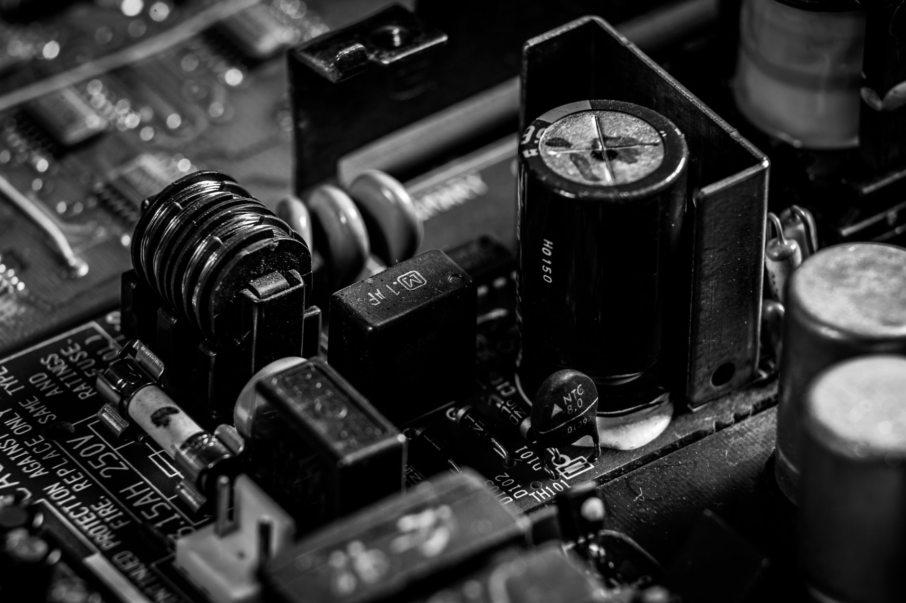

탄탈럼 커패시터 소재, AI 서버 수요 폭증에 공급 병목 가시화

탄탈럼(Ta)은 고온 안정성이 뛰어난 소형 커패시터 핵심 소재로, AI 서버 전원부·자동차 전장 모듈·방산 전자 장비에 필수적으로 들어간다. AI 서버 한 대에 탄탈럼 커패시터가 평균 200~400개 탑재되며, GPU 클러스터 1MW급 데이터센터 기준 탄탈럼 소요량은 수십 kg 단위다.
글로벌 탄탈럼 원광의 약 65%가 콩고민주공화국(DRC)·르완다·나이지리아 등 중앙아프리카 3국에서 생산된다. 2025년 상반기 DRC 동부 분쟁 재발로 채굴·수출 인프라가 부분 차단되면서 정제 원료 입고 지연이 현장에서 확인된다. 탄탈럼 현물 가격은 2024년 대비 25~30% 상승했다.
국내 탄탈럼 커패시터 소재 가공사는 사실상 전무하다. 삼성전기·삼화콘덴서 등 국내 커패시터 제조사는 일본 쇼와덴코(현 레조낙)·미국 케이멧(KEMET·테드락) 등 해외 정제사에 탄탈럼 분말을 100% 의존한다. 국내 AI 서버 조립사 및 삼성전자 서버 사업부의 간접 리스크 노출 구조다.
미국 무역대표부(USTR)는 2025년 5월 DRC·르완다산 3T 광물(탄탈럼·주석·텅스텐) 공급망 실사 강화 가이드라인을 발표했다. 이에 따라 미국 최종 납품 제품에 탄탈럼 원산지 추적 서류 제출이 사실상 의무화됐고, 국내 전장 부품 수출사의 서류 부담이 증가하고 있다.
탄탈럼 병목은 갈륨·게르마늄과 다른 구조다. 갈륨·게르마늄은 중국이 수출 허가를 무기화하는 '정책 리스크'지만, 탄탈럼은 분쟁 지역 광산→아프리카 수출항→정제 공장으로 이어지는 '물리적 공급망 리스크'다. 두 리스크의 대응 방식은 다르다. 정책 리스크는 재고·이중소싱으로 헤징하지만, 물리 리스크는 정제 중간 단계 투자 없이 단기 해소가 불가능하다.
AI 서버 수요가 폭증하는 타이밍에 공급 병목이 겹쳤다는 점이 심각하다. 엔비디아 GB200 NVL72 랙 기준 탄탈럼 커패시터 소요량은 이전 세대 대비 약 40% 증가했으며, 국내 AI 데이터센터 투자 계획(KT·SKT·네이버 합산 2025~2026년 3조 원 이상)에 연동된 탄탈럼 수요 증가가 현물 가격에 선반영되고 있다.
탄탈럼 원광 정제 설비를 보유한 일본 레조낙(Resonac·구 쇼와덴코)과 미국 케이멧(KEMET)이 공급 병목 수혜를 본다. 특히 레조낙은 중앙아프리카 외 호주 탄탈럼 광산(Wodgina 프로젝트)과의 장기 공급 계약을 보유해 공급 안정성을 차별화 포인트로 제시할 수 있다.
호주 Pilbara Minerals·AMG Advanced Metallurgy Group은 비아프리카 탄탈럼 공급 루트를 확보하고 있어 DRC 리스크 회피를 원하는 구매사의 대안 소싱처로 부상한다. 2025년 들어 한국 전장 부품 업체들의 호주産 탄탈럼 정제사 접촉 빈도가 확실히 늘었다.
삼성전기·삼화콘덴서 등 탄탈럼 커패시터 제조사는 원재료 단가 상승이 제품 가격에 즉각 전가되지 않는 구조로 마진 압박이 심화된다. 탄탈럼 분말 단가가 30% 오르면 커패시터 생산원가는 8~12% 오르지만, 고객사 단가 인상 협의에는 통상 6~12개월이 소요된다.
AI 서버 제조사(국내 ODM사 포함)의 자재 조달 계획에 불확실성이 추가된다. 탄탈럼 커패시터 리드타임이 16~20주에서 24~28주로 늘어나는 현상이 2025년 2분기부터 확인되고 있어, 서버 납기 지연 리스크가 전방 고객사에 전가된다.
탄탈럼 커패시터 구매 담당자는 지금 즉시 호주·캐나다산 탄탈럼을 원산지로 하는 정제사와의 이중 소싱 계약을 검토해야 한다. DRC産 의존 공급망은 분쟁 주기와 맞물려 3~5년 단위로 공급 차질이 반복됐다. 단가 5~10% 프리미엄은 납기 안정화 비용으로 계산해야 한다.
전장 부품 대미 수출사는 USTR 3T 광물 실사 가이드라인에 맞춘 원산지 추적 서류(CoC, Chain of Custody) 체계를 올해 안에 구축해야 한다. 2026년부터 미국 바이어가 서류 미비 부품을 반입 거부할 가능성이 높다.
실제 조달 현장에서는 — 일부 국내 커패시터 구매 담당자들이 일본 정제사에 물량을 요청했을 때 '우선 배정 고객 리스트가 가득 찼다'는 답변을 받고 있다. 이는 공급 병목이 이미 실물화됐다는 신호다. 지금 대기 명단에라도 올라 있지 않은 기업은 2025년 4분기 이후 커패시터 조달에 실질적 차질이 발생할 수 있다.
이 포스팅은 쿠팡 파트너스 활동의 일환으로 수수료를 제공받습니다.